Феррозондовый магнитометр с кольцевым сердечником из магнитомягкого феррита
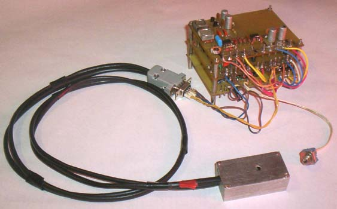
1. Введение
При конструировании феррозондовых магнитометров (fluxgates) можно сравнительно простыми средствами достичь порога чувствительности и разрешающей способности в 1 нТл [2, 3, 11], а в идеале при известном усердии и десятков пТл, и уровня шума 1 пТл√Гц на частоте 1 Гц [1, 8]. По своим параметрам и рабочему диапазону, простирающемуся до нескольких мТл, феррозондовые магнитометры пока остаются вне конкуренции в сравнении с другими магнитометрическими датчиками, например, анизотропными магниторезистивными датчиками (AMR-sensors), имеющими разрешающую способность на уровне 10 нТл [14, 18, 24 - 26], и в некоторых случаях могут даже заменять высокотемпературные СКВИДы (SQUIDs). Достижимые характеристики определяют и возможные области их применения: точные измерения магнитного поля Земли, других небесных тел и в космосе, изучение магнитосферы и солнечного ветра, навигация, палеомагнетизм, геологоразведка, магнитная аэроразведка, поиск мин и неразорвавшихся боеприпасов, обнаружение подводных лодок и другой боевой техники, контроль автомобильного трафика, детекторы оружия в аэропортах и других местах скопления людей, изучение магнитных свойств образцов, неразрушающий контроль материалов, считывание магнитных меток, измерение электрического тока и т. д.
Проведенная ранее разработка различных схем и способов построения феррозондового магнитометра [21] показала возможность изготовления прибора с вполне приемлемыми характеристиками на основе кольцевых сердечников из магнитомягких ферритов с достаточно большой начальной магнитной проницаемостью (несколько тысяч), несмотря на их невысокие для данной задачи магнитные и иные свойства. Данная работа была продолжена с целью улучшения рабочих и эксплуатационных характеристик феррозондового магнитометра, изучения возможности его практического применения, а также в качестве подготовительного этапа, имеющего целью дальнейшее усовершенствование прибора с применением новых магнитных материалов, схемотехнических и программных решений.
2. Принцип работы феррозонда с кольцевым сердечником
Работа феррозонда основана на регистрации периодических изменений потока измеряемого магнитного поля через ферромагнитный сердечник, магнитная проницаемость которого периодически изменяется за счет поля катушки возбуждения. Эти изменения фиксируются посредством сигнальной (измерительной) катушки, в которой наводится электродвижущая сила (ЭДС). Конструкция феррозонда с кольцевым сердечником показана на рис. 2.1. На сердечник наматывается тороидальная обмотка возбуждения, по которой пропускается переменный ток. Сердечник с обмоткой помещается внутрь сигнальной катушки, с которой снимается измерительный сигнал. Так как рабочее поле возбуждения имеет то же направление, что и измеряемое поле, то феррозонд с кольцевым сердечником относится к феррозондам параллельного типа.
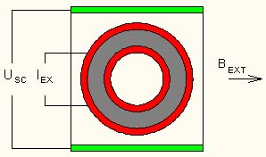
Рис. 2.1. Феррозонд параллельного типа с кольцевым ферромагнитным сердечником. На сердечнике намотана тороидальная обмотка возбуждения. Сердечник с обмоткой возбуждения помещен внутрь сигнальной обмотки, намотанной на прямоугольном каркасе.
Упрощенная схема феррозонда параллельного типа показана на рис. 2.2. Феррозонд имеет ферромагнитный сердечник из магнитомягкого материала (CORE), на котором расположены катушка возбуждения (Exitation Coil – EC) и сигнальная катушка (Signal Coil – SC). Через катушку возбуждения протекает переменный ток возбуждения IEC, создающий внутри сердечника возбуждающее переменное магнитное поле, перемагничивающее сердечник до насыщения. Магнитная проницаемость сердечника имеет нелинейную зависимость от возбуждающего поля, поэтому она изменяется во времени с частотой, вдвое большей частоты тока возбуждения. Следствием является изменение потока внешнего измеряемого магнитного поля, проходящего сквозь сердечник и расположенную на нем сигнальную катушку [3, 6, 11, 12]. Изменяющийся магнитный поток в соответствии с законом электромагнитной индукции Фарадея [15, 27] создает в сигнальной катушке ЭДС ESC, и на выводах катушки появляется сигнальное напряжение USC.
Рис. 2.2. Упрощенная схема феррозонда с полем возбуждения параллельным измеряемому: ферромагнитный сердечник из магнитомягкого материала, на котором расположены катушка возбуждения, перемагничивающая сердечник до насыщения, и сигнальная (измерительная) катушка, с которой снимается измеряемый сигнал.
В соответствии с законом электромагнитной индукции Фарадея [15, 27] ЭДС сигнальной катушки ESC определяется как:

где F – потокосцепление сигнальной катушки с магнитным полем сердечника, которое в упрощенном варианте может быть выражено через индукцию BCORE магнитного поля в сердечнике феррозонда, площадь его поперечного сечения ACORE и число витков сигнальной катушки NSC:

Магнитная индукция BEXT и напряженность HEXT измеряемого внешнего магнитного поля связаны соотношением:

где m0 = 4 p ∙ 10-7 Гн/м – магнитная постоянная. Сердечник создает собственное размагничивающее поле HD, которое направлено противоположно внешнему полю HEXT и определяется через намагниченность сердечника MCORE и фактор размагничивания D:

Поэтому напряженность магнитного поля в сердечнике HCORE:

Намагниченность сердечника пропорциональна напряженности магнитного поля в нем:
где c – магнитная восприимчивость материала сердечника. Индукция магнитного поля внутри сердечника BCORE:
С учетом вышеизложенного можно определить магнитную индукцию в сердечнике через магнитную индукцию внешнего поля. Вначале находим напряженность магнитного поля в сердечнике через напряженность внешнего магнитного поля и магнитную восприимчивость материала сердечника:


Используя соотношение m = c + 1, где m – магнитная проницаемость материала сердечника, получаем:

Тогда:

или

где mA – кажущаяся магнитная проницаемость сердечника:

Таким образом, ЭДС сигнальной катушки:

С учетом того, что
получаем

или

Для напряжения на выводах сигнальной катушки USC, пренебрегая знаком:

или
Таким образом, при протекании переменного тока через намотанную на кольцевой сердечник катушку возбуждения магнитная проницаемость сердечника, имеющая нелинейную зависимость от напряженности поля в сердечнике, изменяется, обеспечивая изменение потока внешнего магнитного поля через сигнальную катушку и появление на ее выводах напряжения с частотой, равной удвоенной частоте тока через катушку возбуждения. Т. е. феррозонд работает как магнитный модулятор потока внешнего магнитного поля и измеритель индуцированной этим процессом ЭДС. Феррозонд является прибором векторного типа, измеряющим составляющую магнитной индукции (или напряженности магнитного поля) вдоль измерительной оси феррозонда.
В измерительных схемах феррозонд может использоваться либо непосредственно как источник измерительного сигнала, получаемого обработкой напряжения сигнальной обмотки (рис. 2.3), либо, в соответствии с принципом суперпозиции [15], как нуль-детектор в компенсационной схеме измерений (рис. 2.4). Данная схема использует дополнительную компенсационную катушку (либо ее функцию выполняет сигнальная катушка), в которой создается магнитное поле, равное по величине и противоположное по направлению измеряемому полю. Феррозонд помещается внутрь компенсационной катушки и выполняет роль измерителя разностного (между измеряемым и компенсирующим полями) поля, близкого к нулю.

Рис. 2.3. Измерительная схема с феррозондом как источником измерительного сигнала: L1 (EC) - обмотка возбуждения, L2 (SC) - сигнальная обмотка.
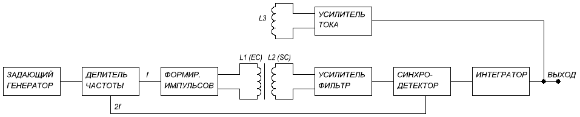
Рис. 2.4. Компенсационная схема измерений с феррозондом в качестве нуль-детектора: L1 (EC) - обмотка возбуждения, L2 (SC) - сигнальная обмотка, L3 - компенсационная обмотка.
В обоих измерительных схемах используется задающий генератор и делитель частоты, формирующий импульсы напряжения частотой f для генерации импульсов тока возбуждения в обмотке возбуждения L1 феррозонда и импульсы напряжения удвоенной частоты 2f с заданным фазовым сдвигом для управления синхродетектором. Полезный сигнал с сигнальной обмотки L2 феррозонда, содержащий вторую гармонику частотой 2f и более старшие четные гармоники, усиливается, фильтруется и подается на синхродетектор. После синхродетектора выпрямленный сигнал поступает на вход фильтра нижних частот (ФНЧ) и непосредственно на выход схемы (рис. 2.3), либо на интегратор и через усилитель тока подается на компенсационную катушку L3, создающую магнитное поле, равное по величине и противоположное по направлению измеряемому полю (рис. 2.4). Величина тока в компенсационной катушке прямо пропорциональна магнитной индукции компенсирующего поля, соответствующий ей сигнал может использоваться как выходной. Компенсационная схема измерений способна, вообще говоря, обеспечить более высокую чувствительность, линейность и ширину измерительного диапазона, а также более низкий уровень шумов, так как феррозонд находится в близком к нулю магнитном поле. В качестве компенсационной катушки может использоваться либо сигнальная катушка (с цепями, обеспечивающими разделение высокочастотного переменного напряжения полезного сигнала и постоянного или низкочастотного компенсирующего тока), либо отдельная катушка, которой можно придать требуемые параметры и форму, например, сферическую для трехкомпонентного магнитометра [4]. Постоянная времени ФНЧ или интегратора определяет частотный диапазон прибора.
Сигнальную катушку феррозонда в измерительных схемах можно использовать либо как источник напряжения (многовитковая катушка), сигнал с которого подается на усилитель напряжения, либо как источник тока (маловитковая катушка), который подключается к преобразователю ток-напряжение [5, 11]. Каждый из вариантов имеет свои преимущества и недостатки. При использовании сигнальной катушки в режиме источника напряжения можно параллельно ей подключить конденсатор для настройки на частоту полезного сигнала (или воспользоваться для этой цели паразитной емкостью самой катушки), в качестве которого, как правило, выбирается вторая гармоника (параметрическое усиление) [9]. При этом удается повысить чувствительность магнитометра, но зачастую ценой ухудшения стабильности.
3. Конструкция феррозонда с кольцевым сердечником из магнитомягкого феррита
Преимущества феррозондов параллельного типа с кольцевым сердечником следующие [8, 11]:
Геометрические
характеристики кольцевого сердечника могут быть представлены следующими
параметрами (рис. 3.1):
Внутренний диаметр (диаметр отверстия) D1
Внешний диаметр D2
Высота H

Рис. 3.1. Геометрические параметры кольцевого сердечника: D1 – внутренний диаметр (диаметр отверстия), D2 – внешний диаметр, H – высота.
Геометрические параметры кольца определяются обозначением его типоразмера, например, для типоразмера К12х8х3 D1 = 8 мм, D2 = 12 мм, H = 3 мм. За типоразмером может следовать обозначение начальной магнитной проницаемости и состава, например, 3000НМ – марганец-цинковый феррит с начальной магнитной проницаемостью 3000.
Основными критериями выбора материала сердечника феррозонда являются [10, 11]:
Наилучшие параметры, особенно в плане соотношения сигнал-шум, имеют феррозонды с сердечниками из термообработанного пермаллоя или аморфных материалов на основе кобальта [4, 8, 11], хотя магнитомягкие ферриты с высоким значением магнитной проницаемости также позволяют достичь неплохих результатов [21]. Поэтому в качестве недорогого и доступного сердечника феррозонда выбрано кольцо из магнитомягкого феррита типоразмера К12х8х3 3000НМ, измеренная магнитная проницаемость которого составила 3000. Кривая намагничивания (петля гистерезиса) на частоте 10 кГц показана на рис. 3.2 [23].

Рис. 3.2. Кривая намагничивания ферритового кольца К12х8х3 3000НМ на частоте 10 кГц. Цена деления по горизонтали 0.5 Э ≈ 39.8 А/м. Цена деления по вертикали 0.1 Тл. Коэрцитивная сила по индукции HCB ≈ 0.25 Э ≈ 19.9 А/м. Индукция насыщения BS ≈ 0.425 Тл. Измеренная магнитная проницаемость 3000.
На неизолированное ферритовое кольцо К12х8х3 3000НМ равномерно наматывается в один слой обмотка возбуждения 62 ... 63 витка медного провода в шелковой изоляции (рис. 3.3). Выводы обмотки скручиваются между собой и впоследствии припаиваются к контактным площадкам печатной платы, служащей основанием для сердечника феррозонда.
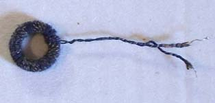
Рис. 3.3. Сердечник феррозонда с обмоткой возбуждения: примерно 62 ... 63 витка медного провода ПЭЛШО 0.27 мм равномерно намотаны в один полностью заполненный слой на неизолированном ферритовом кольце К12х8х3 3000НМ. Выводы обмотки скручены между собой. Активное сопротивление примерно 0.32 Ом. Индуктивность примерно 2.60 ... 2.80 мГн на частоте 1000 Гц.
Обмотка возбуждения пропитывается эпоксидной смолой, сверху наклеивается юстировочная шайба из стеклотекстолита толщиной 0.5 мм с прорезью (рис. 3.4), позволяющая поворачивать сердечник феррозонда с намотанной на нем обмоткой возбуждения внутри измерительной катушки для настройки нулевого сдвига выходного сигнала в отсутствие магнитного поля.
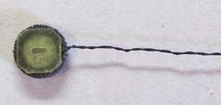
Рис. 3.4. Сердечник феррозонда с обмоткой возбуждения, пропитанной эпоксидной смолой. Сверху наклеена юстировочная шайба с прорезью.
В качестве основания для установки сердечника феррозонда с обмоткой возбуждения используется печатная плата толщиной 0.5 мм с вклеенным поворотным устройством (осью), на которое надевается сердечник феррозонда. Эскиз основания показан на рис. 3.5, а внешний вид - на рис. 3.6. На рис. 3.7 показано основание с установленным на нем сердечником феррозонда с обмоткой возбуждения и юстировочной шайбой.
Рис. 3.5. Эскиз печатной платы - основания для установки сердечника феррозонда с обмоткой возбуждения. Односторонний фольгированный стеклотекстолит толщиной 0.5 мм. Размер платы 30 х 15 мм2.
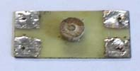
Рис. 3.6. Внешний вид печатной платы - основания для установки сердечника феррозонда с обмоткой возбуждения. По центру вклеено поворотное устройство, на которое надевается сердечник феррозонда с обмоткой возбуждения.
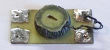
Рис. 3.7. Сердечник феррозонда с обмоткой возбуждения и юстировочной шайбой, смонтированный вместе с поворотным устройством на основании.
Активное сопротивление обмотки возбуждения феррозонда измерено мультиметром APPA-107N и составляет примерно 0.32 Ом. Индуктивность измерена LC-метром VC6243 на частоте 1000 Гц и для разных экземпляров находится в примерном диапазоне 2.60 ... 2.80 мГн.
Внешний вид катушки, предназначенной для измерения сигнала феррозонда, показан на рис. 3.8. Катушка намотана на каркасе из оргстекла и состоит из двух секций по 300 витков медного провода диаметром 0.1 мм каждая, разделенных некоторым промежутком, позволяющем иметь отверстие в центре каркаса для юстировки сердечника феррозонда. Она может служить одновременно в качестве сигнальной и компенсационной катушки. Активное сопротивление катушки измерено мультиметром APPA-107N и составляет примерно 75 Ом. Индуктивность катушки измерена LC-метром VC6243 на частоте 1000 Гц и составляет примерно 4.85 мГн без сердечника феррозонда и 6.37 мГн, когда внутрь катушки вставлен сердечник феррозонда с обмоткой возбуждения.
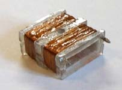
Рис. 3.8. Внешний вид сигнально-компенсационной катушки: 600 витков медного провода ПЭТВ-1 диаметром 0.1 мм равномерно намотаны на каркасе из оргстекла, выполнена пропитка эпоксидной смолой. Активное сопротивление катушки примерно 75 Ом, индуктивность на частоте 1000 Гц примерно 4.85 мГн (без сердечника феррозонда). Размер катушки 22 х 22 х 10 мм3 (без выводов).
Расчет сигнально-компенсационной катушки выполнен с помощью программы Rectangular Coil V1.0 [22]. Результаты расчета для одной секции показаны на рис. 3.9 и 3.10.
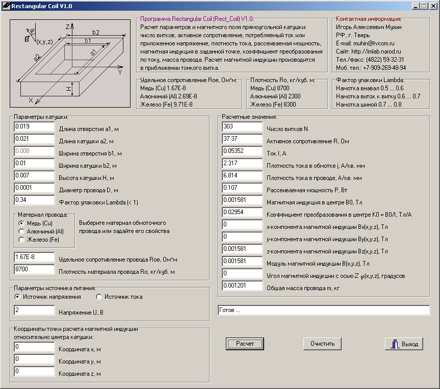
Рис. 3.9. Расчет одной секции сигнально-компенсационной катушки с помощью программы Rectangular Coil. Магнитная индукция в центре секции (т. е. на расстоянии 5.5 мм от центра целой катушки) составляет примерно 1580 мкТл при напряжении питания секции 2 В (4 В для целой катушки) и потребляемом токе около 54 мА.
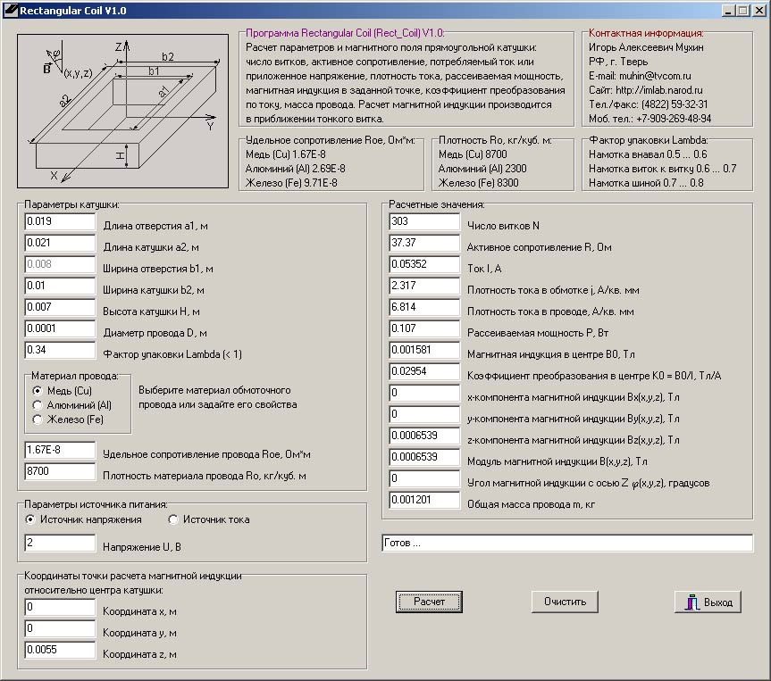
Рис. 3.10. Расчет одной секции сигнально-компенсационной катушки с помощью программы Rectangular Coil. Магнитная индукция на расстоянии 5.5 мм от центра секции (т. е. в центре целой катушки) составляет примерно 650 мкТл при напряжении питания секции 2 В (4 В для целой катушки) и потребляемом токе около 54 мА.
Результаты расчета показывают, что при общем напряжении питания до 5 В можно создать в зоне расположения сердечника феррозонда компенсирующее магнитное поле с достаточно большим значением магнитной индукции (порядка 1000 мкТл) при приемлемом значении потребляемого тока (порядка 50 мА). Соответственно, компенсирующее поле с магнитной индукцией до 200 мкТл (вариант измерительного диапазона магнитометров с анизотропными магниторезистивными датчиками [24, 26], обусловленный применением вольтметра на 3 1/2 разряда) может быть сгенерировано при существенно более низких уровнях потребляемого тока (порядка 10 мА).
На рис. 3.11 показано расчетное распределение осевой (аксиальной) составляющей магнитной индукции внутри сигнально-компенсационной катушки по ее длине при напряжении питания 1 В (0.5 В на секцию) и потребляемом токе примерно 13 мА. Расчеты магнитной индукции сделаны с помощью программы Rectangular Coil для каждой из секций по отдельности для соответствующих координат z (центру целой катушки соответствует координата z = 5.5 мм одной секции и z = -5.5 мм другой секции). Индукция магнитного поля целой катушки в соответствии с принципом суперпозиции [15] рассчитана как сумма магнитных индукций полей составляющих ее секций в расчетной точке.

Рис. 3.11. Распределение аксиальной составляющей магнитной индукции вдоль оси сигнально-компенсационной катушки при разных от нее расстояниях в поперечном направлении (по направлению большего размера поперечного сечения) при напряжении питания 1 В и потребляемом токе 13.38 мА.
Хотя неравномерность осевой составляющей магнитной индукции вдоль оси сигнально-компенсационной катушки в зоне расположения сердечника феррозонда достаточно велика, в принципе, ее можно считать вполне приемлемой для построения компенсационной схемы измерения с использованием только одной катушки, выполняющей две функции одновременно. Среднее значение осевой составляющей магнитной индукции находится на уровне 400 мкТл при токе питания примерно 13 мА (коэффициент преобразования около 30 мкТл/мА), что дает представление о требованиях к построению электронных каскадов измерительной компенсационной схемы на заданный рабочий диапазон (+200 мкТл).
Смонтированный на основании сердечник феррозонда с обмоткой возбуждения вставляется в сигнально-компенсационную катушку и вместе с ней крепится пайкой к основанию феррозонда, эскиз которого приведен на рис. 3.12. Далее вся конструкция (рис. 3.13) устанавливается в выфрезерованный немагнитный дюралюминиевый корпус, служащий электромагнитным экраном, и закрывается крышкой с отверстием для юстировки сердечника феррозонда (рис. 3.14). Юстировка производится во время процедур налаживания и калибровки, после чего поворотный механизм фиксируется посредством быстросохнущего нитролака.


Рис. 3.12. Основание феррозонда для крепления сердечника с обмоткой возбуждения и сигнально-компенсационной катушки (верхняя сторона и нижняя сторона в зеркальном отображении). Двухсторонний фольгированный стеклотекстолит толщиной 1.5 мм. Размер платы 40 х 25 мм2.
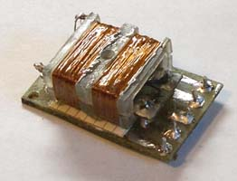
Рис. 3.13. Феррозонд в сборе на основании - печатной плате размером 40 х 25 мм2. Индуктивность обмотки возбуждения (с подключающим кабелем длиной 1 м) 2.80 мГн на частоте 1000 Гц, активное сопротивление примерно 0.32 Ом. Индуктивность сигнальной обмотки (с подключающим кабелем длиной 1 м) 6.28 мГн на частоте 1000 Гц (сердечник с обмоткой возбуждения внутри), активное сопротивление около 75 Ом.
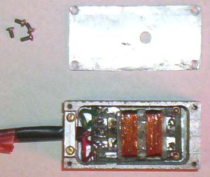
Рис. 3.14. Феррозонд, смонтированный в дюралюминиевом корпусе с защитной крышкой. Габариты корпуса 60 х 30 х 22 мм3.
4. Конструкция электронного преобразователя феррозондового магнитометра
Феррозондовый магнитометр построен по компенсационной схеме в соответствии с рис. 2.4. Феррозонд используется в качестве нуль-детектора, поэтому при стабильной работе он находится в магнитном поле, близком к нулю. Блок-схема прибора приведена на рис. 4.1.
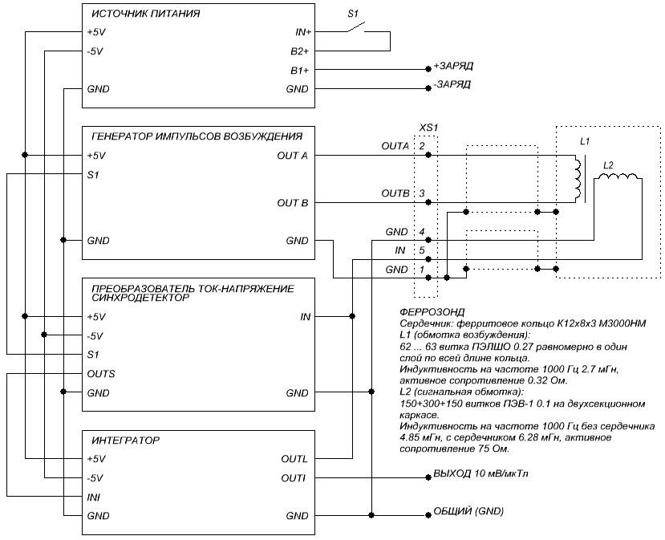
Рис. 4.1. Блок-схема феррозондового магнитометра с кольцевым сердечником из магнитомягкого феррита.
Источник питания феррозондового магнитометра преобразует напряжение литий-ионной батареи +3.7 В в двухполярное напряжение +5 В, используемое для питания остальных узлов. Выключатель S1 предназначен для оперативного включения-выключения прибора. Батарея может заряжаться от стандартного зарядного устройства с выходным напряжением +5 В, которое подается на контакты +ЗАРЯД и -ЗАРЯД. Более детальное описание источника питания приведено в п. 5. Генератор импульсов возбуждения и управления (см. п. 6) служит для получения коротких разнополярных токовых импульсов (OUT A, OUT B), подающихся на обмотку возбуждения феррозонда L1 и позволяющих полностью перемагничивать его сердечник, а также импульсов управления синхродетектором (S1). Выход сигнально-компенсационной обмотки феррозонда L2 подключен ко входу преобразователя ток-напряжение IN, выходной сигнал которого после полосового фильтра поступает на синхродетектор, управляемый импульсами с генератора (S1). Продетектированное напряжение подается на вход INI интегратора, который вырабатывает токовый сигнал обратной связи OUTL, подающийся на сигнально-компенсационную катушку, а также выходной сигнал OUTI, пропорциональный компенсационному току с коэффициентом преобразования 10 мВ/мкТл.
5. Источник питания узлов феррозондового магнитометра
Для обеспечения возможной совместимости с электронными цифровыми схемами (в частности, микроконтроллерами) в качестве стандарта питания выбрано напряжение +5 В относительно общего провода. Источником питания, обеспечивающим возможность автономной работы, служит литий-ионная батарея с выходным напряжением 3.7 В, используемая совместно с повышающим импульсным преобразователем напряжения до уровня +5 В. Ток, потребляемый от батареи при работе только генератора импульсов возбуждения, который является наиболее энергозатратным узлом магнитометра, составляет около 150 мА. Этот ток вряд ли можно снизить существенно, если не менять тип сердечника феррозонда и обмотку возбуждения. Остальные узлы магнитометра представляются менее энергозатратными, и их энергопотребление может быть снижено за счет применения соответствующей элементной базы и схемных решений. Оценивая общий потребляемый от батареи ток в пределах 200 мА, получаем, что при емкости батареи порядка 2000 мА ∙ часов время работы в автономном режиме без подзарядки может достигать примерно 8 часов (рабочий день).
При использовании однополярного питания могут возникать проблемы создания искусственной средней точки и сопряжения прибора с входами USB компьютера и внешними измерительными приборами. В этих случаях двухполярное питание (например, +5 В относительно общего провода) более предпочтительно. Оно может быть получено по схеме: первичный повышающий преобразователь напряжения аккумуляторной батареи - инвертор [13]. На рис. 5.1 приведена электрическая принципиальная схема повышающего импульсного преобразователя напряжения аккумуляторной батареи до уровня +5 В с выходным током до 500 мА и инвертора (преобразователя постоянного напряжения +5 В в отрицательное -5 В) с выходным током до 200 мА.
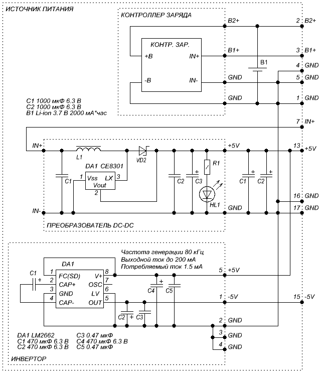
Рис. 5.1. Схема электрическая принципиальная автономного источника питания с выходным напряжением -5 В и +5 В.
На рис. 5.2 показан эскиз печатной платы источника питания, а на рис. 5.3 - ее внешний вид.

Рис. 5.2. Эскиз печатной платы автономного источника питания с батареей B1 и с прочими узлами (контроллер заряда аккумуляторной батареи - КОНТРОЛЛЕР ЗАРЯДА - CONT, импульсный повышающий преобразователь с выходным напряжением +5 В - ПРЕОБРАЗОВАТЕЛЬ DC-DC, импульсный инвертор с выходным напряжением -5 В - ИНВЕРТОР - INVERTOR). Односторонний фольгированный стеклотекстолит толщиной 1.5 мм. Размер платы 100 х 75 мм2.
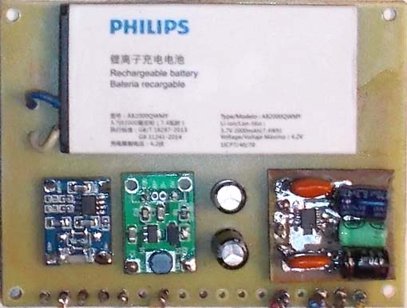
Рис. 5.3. Внешний вид печатной платы автономного источника питания с литий-ионной батареей емкостью 2000 мА ∙ часов (7.4 Вт ∙ час) и с прочими узлами (контроллер заряда аккумуляторной батареи, импульсный повышающий преобразователь с выходным напряжением +5 В, импульсный инвертор с выходным напряжением -5 В).
6. Генератор импульсов возбуждения и управления с согласующей цепью
Генератор импульсов возбуждения и управления с кварцевой стабилизацией частоты собран по схеме, приведенной на рис. 6.1. Основой генератора является узел, формирующий две последовательности противофазных импульсов, разделенных временными паузами [20], служащих для управления мостовым инвертором.
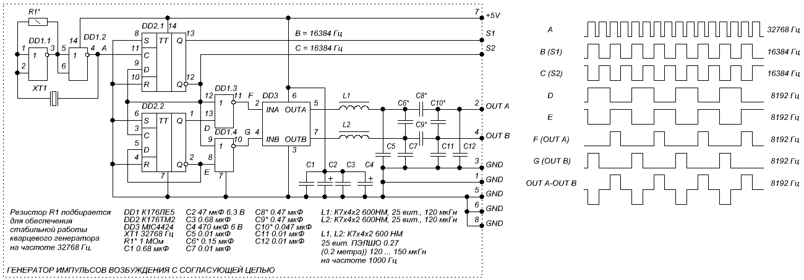
Рис. 6.1. Схема электрическая принципиальная генератора импульсов возбуждения и управления с согласующей цепью. Импульсы частотой 16384 Гц (B(S1), C(S2)) предназначены для управления синхродетектором (с разным фазовым сдвигом). Импульсы частотой 8192 Гц через согласующую цепь подаются на обмотку возбуждения феррозонда (OUT A-OUT B).
Узел на микросхемах DD1.1DD1.2 (1/2 К176ЛЕ5) служит задающим генератором импульсов частотой часового кварца XT1 32768 Гц. Триггер DD2.1 (1/2 К176ТМ2) формирует прямоугольные импульсы прямой и инверсной полярности с коэффициентом заполнения 50 % частотой 16384 Гц, которые могут быть использованы для управления синхродетектором с заданным сдвигом по фазе (0 или 900). Узел DD2.2DD1.3DD1.4 (1/2 К176ЛЕ5, 1/2 К176ТМ2) служит для формирования противофазных импульсов частотой 8192 Гц, управляющих мостовым инвертором DD3 (MIC4424). Разнополярные импульсы возбуждения с выхода микросхемы DD3 через согласующую цепь L1L2C5C6C7C8C9C10C11C12 поступают на выходы OUT A и OUT B генератора.
Роль согласующей цепи заключается в следующем. При непосредственном подключении обмотки возбуждения феррозонда к выходам микросхемы DD3 генератора величина возбуждающего тока может оказаться недостаточной для полного перемагничивания сердечника вследствие невысокого напряжения питания генератора (+5 В). Так как индуктивность обмотки возбуждения феррозонда достаточно большая, а активное сопротивление невелико, то для получения достаточной величины возбуждающего тока при невысокой амплитуде переменного напряжения необходимо использовать настраиваемую на частоту феррорезонанса согласующую цепь с тюнинговыми конденсаторами и дросселями, включенными последовательно и параллельно с обмоткой возбуждения [4].
Емкость тюнинговых конденсаторов C5 - C12 подбирается такой, чтобы настроить полученный контур в резонанс с входным сигналом (с учетом того, что при изменении тока в обмотке возбуждения ее индуктивность также изменяется вследствие изменения магнитной проницаемости сердечника) и получить максимальную амплитуду тока в цепи возбуждения. Кроме того, подбор емкостей необходим для того, чтобы обеспечить стабильную генерацию импульсов возбуждающего тока при заданной амплитуде напряжения источника возбуждения. Для улучшения стабильности в схему согласующей цепи добавлены последовательно подключенные дроссели L1 и L2. Считается, что согласующая цепь должна быть настроена на частоту несколько ниже (примерно на 5 %) частоты возбуждения феррозонда [2]. Дополнительным полезным свойством согласующей цепи является функция полосового фильтра, подавляющего четные гармоники возбуждающего сигнала, форма которого отличается от синусоидальной (например, при использовании возбуждающего генератора прямоугольных импульсов напряжения по схеме мостового инвертора - рис. 6.1). При правильно настроенной согласующей цепи возбуждающий ток приобретает форму коротких разнополярных импульсов с низким коэффициентом заполнения (рис. 6.3.), что позволяет существенно снизить энергопотребление.
Конденсаторы C8 и C9 включены последовательно с обмоткой возбуждения феррозонда и совместно с проходными конденсаторами C5, C7, C11, C12 обеспечивают симметрию схемы относительно общего провода при запитывании обмотки возбуждения по двухпроводному экранированному кабелю.
Внешний вид печатной платы с генератором импульсов возбуждения и управления с согласующей цепью показан на рис. 6.2. Плата также включает в себя входной преобразователь ток-напряжение на операционном усилителе (ОУ) OP284, подключаемый к сигнально-компенсационной обмотке феррозонда и синхродетектор на микросхеме К561КТ3 (CD4066A).
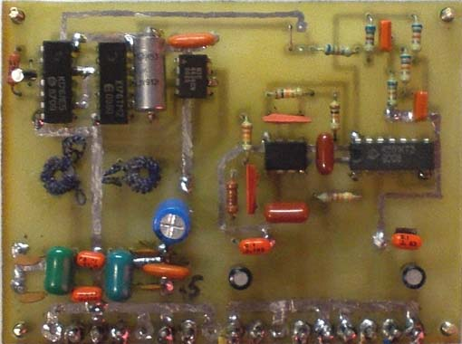
Рис. 6.2. Внешний вид печатной платы с генератором импульсов возбуждения и управления и согласующей цепью. Размер платы 100 х 75 мм2. Генератор импульсов возбуждения и управления с согласующей цепью находится на левой половине печатной платы. На правой половине платы расположены преобразователь ток-напряжение и синхродетектор.
Для получения осциллограммы токовых импульсов возбуждения последовательно с обмоткой возбуждения устанавливался балластный резистор сопротивлением 0.1 Ом, к выводам которого был подключен осциллограф Instrustar ISDS2062B, соединенный с компьютером через интерфейс USB. Токовые импульсы возбуждения показаны на рис. 6.3.
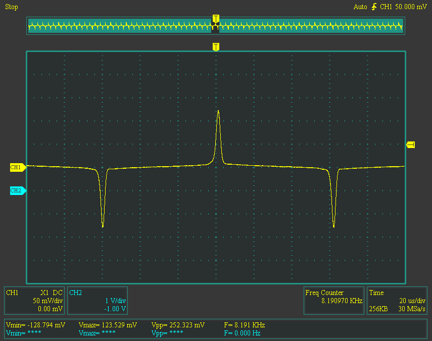
Рис. 6.3. Токовые импульсы возбуждения феррозонда: чувствительность по вертикали 0.5 А/дел., амплитуда тока более 1 А, цена деления по горизонтали 20 мкс/дел., длительность импульса тока около 4 мкс.
Амплитуда токовых импульсов достигает 1.4 А, что при количестве витков обмотки возбуждения 62 ... 63 соответствует магнитодвижущей силе (МДС) не менее 80 А ∙ витков. Таким образом, при среднем диаметре кольцевого сердечника типоразмера К12х8х3, равном 10 мм, амплитуда напряженности магнитного поля достигает 2500 А/м (более 30 Э). Этого вполне достаточно для полного перемагничивания сердечника феррозонда, в том числе и после возможных магнитных шоков.
7. Результаты испытаний феррозондового магнитометра
Феррозондовый магнитометр был откалиброван в однородном магнитном поле калибровочного соленоида [16] с известным коэффициентом преобразования по току. Схема установки для калибровки и ее поверки показана на рис. 7.1, а ее внешний вид - на рис. 7.2. Феррозонд устанавливается в центре калибровочного соленоида в зоне однородного магнитного поля таким образом, чтобы измерительная ось феррозонда совпадала с осью соленоида, а их ориентация была в примерном направлении восток-запад (минимум магнитного поля Земли). Обмотка калибровочного соленоида через переключатель полярности S1 подключается к источнику питания постоянного тока с регулируемым выходным напряжением [17]. Контроль тока обмотки осуществляется амперметром PA1 (мультиметр MY-65 с измерительным диапазоном 10 А). Переменный резистор R1 предназначен для обеспечения плавности регулировки тока обмотки в заданных пределах. Выходное напряжение магнитометра измеряется с помощью мультиметра PV1 (APPA-107N, диапазон 2 В). Перед началом испытаний производится коррекция ориентации калибровочного соленоида с феррозондом, чтобы при отсутствии тока в обмотке выходное напряжение магнитометра было близко к нулю.
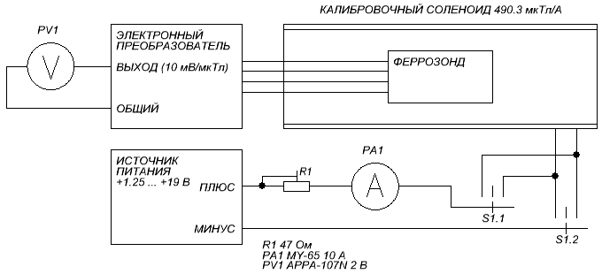
Рис. 7.1. Схема установки для снятия зависимости выходного напряжения феррозондового магнитометра от магнитной индукции калибровочного поля.
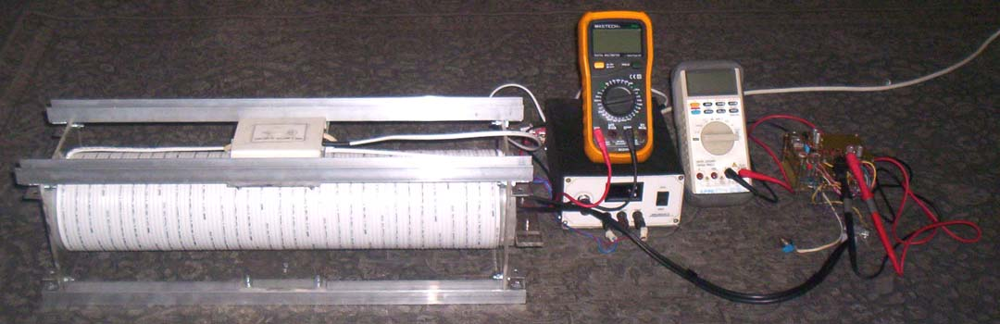
Рис. 7.2. Внешний вид установки для снятия зависимости выходного напряжения феррозондового магнитометра от магнитной индукции калибровочного поля.
График зависимости выходного сигнала откалиброванного магнитометра от индукции магнитного поля калибровочного соленоида показан на рис. 7.3.
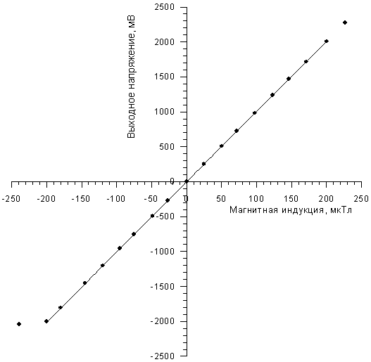
Рис. 7.3. Зависимость выходного напряжения феррозондового магнитометра от индукции магнитного поля калибровочного соленоида.
Выходное напряжение феррозондового магнитометра U линейно зависит от индукции магнитного поля калибровочного соленоида B в пределах -200 ... 200 мкТл в соответствии с формулой U = 10.0367 ∙ B - 2.2219 (среднеквадратичное отклонение - 8.97986). Таким образом, чувствительность магнитометра составляет 10 мВ/мкТл в рабочем диапазоне -200 ... 200 мкТл. Рабочий диапазон при данной чувствительности определяется двухполярным напряжением питания +5 В интегратора электронного преобразователя и характеристиками примененных в нем операционных усилителей OP07.
Форма и спектр выходного сигнала феррозондового магнитометра в переменном магнитном поле изучались на установке, собранной по схеме рис. 7.4. Феррозонд также был установлен в центре калибровочного соленоида в зоне однородного поля, чтобы измерительная ось феррозонда совпадала с осью соленоида. Направление осей примерно соответствовало направлению восток-запад и немного корректировалось, чтобы выходной сигнал магнитометра был как можно ближе к нулю при отсутствии тока в обмотке соленоида. Питание обмотки соленоида осуществлялось от встроенного генератора осциллографа Instrustar ISDS2062B, соединенного с компьютером интерфейсом USB, через добавочный резистор R1 сопротивлением 100 кОм. Это сопротивление было выбрано с учетом коэффициента преобразования калибровочного соленоида таким образом, что при запитывании обмотки соленоида током через резистор R1 магнитной индукции 10 нТл соответствует падение напряжения на резисторе R1 примерно 2 В (2.04 В). Контроль магнитной индукции производился по каналу CH2 осциллографа, на вход которого подавался сигнал с резистора R1. Канал CH1 при этом был подключен к выходу магнитометра с коэффициентом преобразования 10 мВ/мкТл. Внешний вид установки для снятия формы и спектра выходного сигнала магнитометра изображен на рис. 7.5.
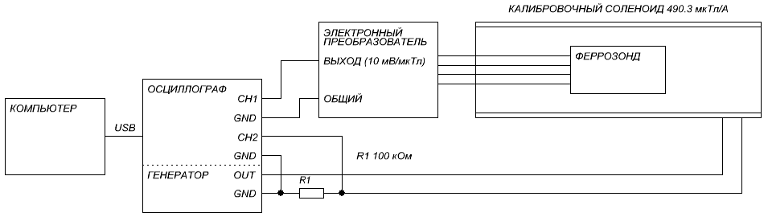
Рис. 7.4. Схема установки для снятия формы и спектра выходного сигнала феррозондового магнитометра.
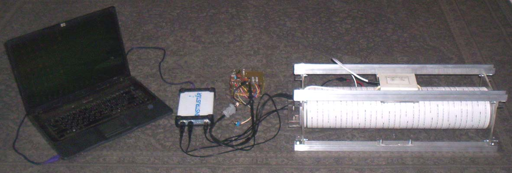
Рис. 7.5. Схема установки для снятия формы и спектра выходного сигнала феррозондового магнитометра.
Выходной сигнал магнитометра для случая близкого к нулю магнитного поля показан на рис. 7.6, а его спектрограмма - на рис. 7.7. На выходе присутствуют шумы с двойным размахом от пика до пика порядка 10 мВ, что для чувствительности 10 мВ/мкТл соответствует магнитной индукции 1 мкТл. Сигнал частотой 50 Гц, обычно всегда присутствующий в зоне сетей переменного тока, практически незаметен на шумовом фоне.
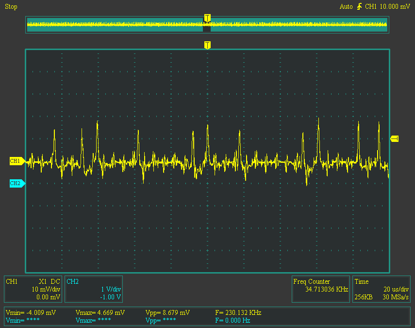
Рис. 7.6. Выходной сигнал феррозондового магнитометра при близком к нулю магнитном поле в зоне расположения феррозонда (ориентация восток-запад). Двойной размах от пика до пика 8.679 мВ соответствует 0.8679 мкТл.
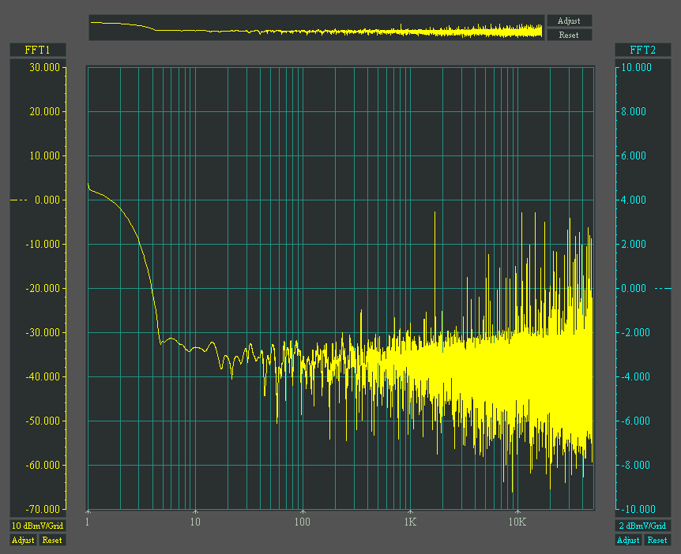
Рис. 7.7. Спектрограмма выходного сигнала феррозондового магнитометра при близком к нулю магнитном поле в зоне расположения феррозонда (ориентация восток-запад). Фильтр Blackman_Harris.
На рис. 7.8 - 7.10 показан спектр выходного сигнала магнитометра для низкочастотных синусоидальных переменных магнитных полей разных частот с амплитудой индукции примерно 20 нТл (двойной размах - 40 нТл). В выходном спектре отчетливо виден сигнал соответствующей частоты на уровне -20 дБмВ. Сигнал частотой 50 Гц также практически незаметен на шумовом фоне.
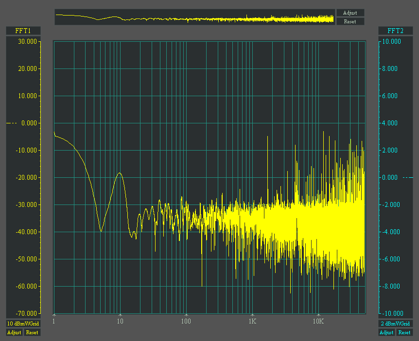
Рис. 7.8. Спектрограмма выходного сигнала феррозондового магнитометра в переменном синусоидальном магнитном поле частотой 10 Гц амплитудой примерно 20 нТл (ориентация восток-запад, постоянная составляющая магнитной индукции близка к нулю). Фильтр Blackman_Harris.
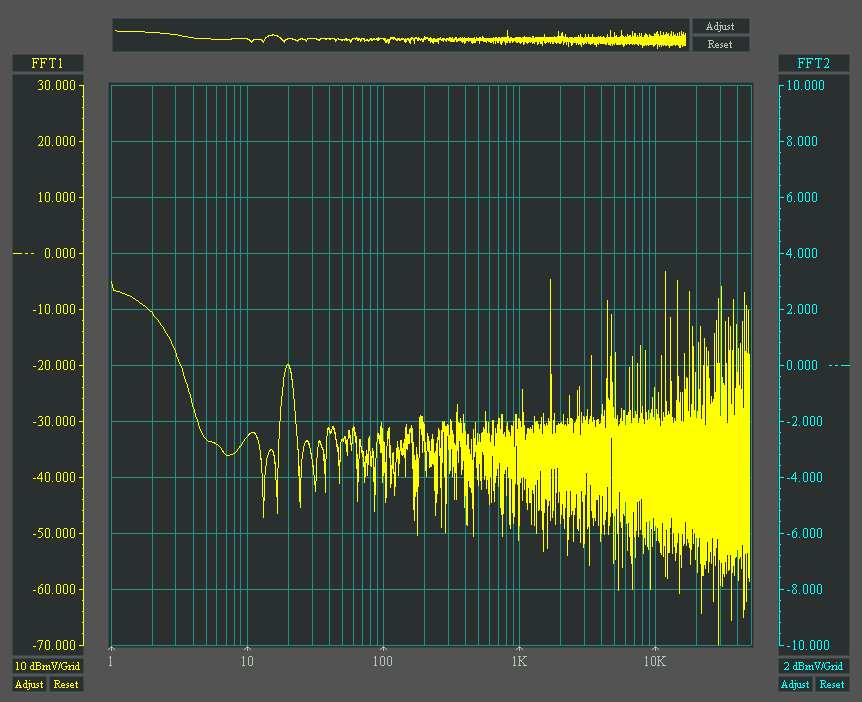
Рис. 7.9. Спектрограмма выходного сигнала феррозондового магнитометра в переменном синусоидальном магнитном поле частотой 20 Гц амплитудой примерно 20 нТл (ориентация восток-запад, постоянная составляющая магнитной индукции близка к нулю). Фильтр Blackman_Harris.
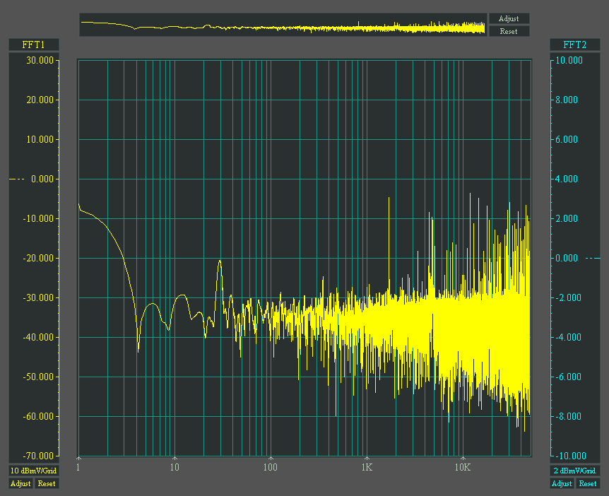
Рис. 7.10. Спектрограмма выходного сигнала феррозондового магнитометра в переменном синусоидальном магнитном поле частотой 30 Гц амплитудой примерно 20 нТл (ориентация восток-запад, постоянная составляющая магнитной индукции близка к нулю). Фильтр Blackman_Harris.
Для оценки разрешающей способности и порога чувствительности была собрана измерительная установка по схеме, показанной на рис. 7.11. Установка аналогична представленной выше (рис. 7.4) за исключением того, что к выходу магнитометра с коэффициентом преобразования 10 мВ/мкТл подключается мулитиметр APPA-107N в режиме записи. Встроенный генератор USB-осциллографа Instrustar ISDS2062B генерирует прямоугольный сигнал частотой 0.1 Гц, соответственно в калибровочном соленоиде создается знакопеременное магнитное поле с заданной амплитудой (двойной размах 20 нТл, 10 нТл, 5 нТл). Внешний вид установки показан на рис. 7.12.
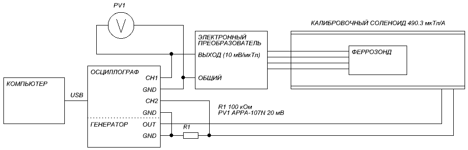
Рис. 7.11. Схема установки для оценки разрешающей способности и порога чувствительности феррорезонансного магнитометра.
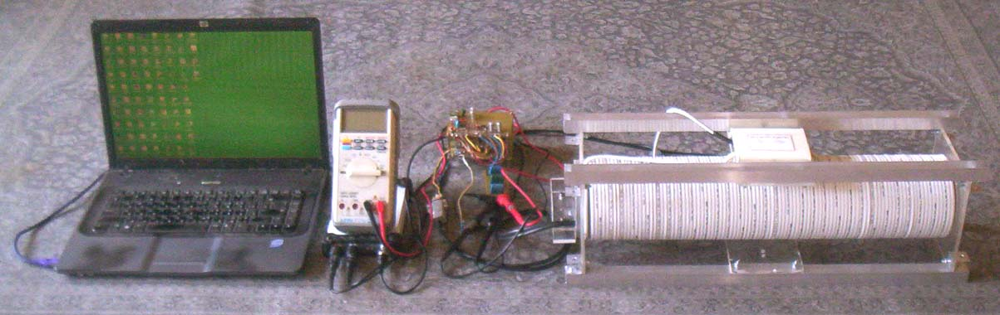
Рис. 7.12. Внешний вид установки для оценки разрешающей способности и порога чувствительности феррорезонансного магнитометра.
На рис. 7.13 и 7.14 показаны графики временной зависимости выходного сигнала магнитометра. С учетом того, что на рис. 7.14 отчетливо различим сигнал от переменного магнитного поля, индукция которого изменяется от -5 нТл до +5 нТл, можно сделать вывод, что разрешающая способность прибора находится на уровне 10 нТл (с учетом весьма вероятного присутствия переменной составляющей магнитного поля частотой 50 Гц с амплитудой порядка 10 ... 20 нТл).
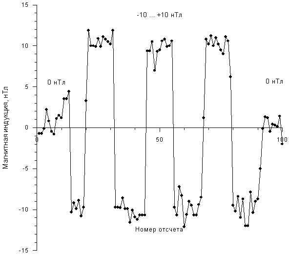
Рис. 7.13. Выходной сигнал феррозондового магнитометра в переменном прямоугольном магнитном поле с размахом 20 нТл. До 10 и после 90 отсчета поле отсутствует, между 10 и 90 отсчетом двойная амплитуда магнитной индукции составляет 20 нТл. Промежуток времени между соседними отсчетами 0.5 с.
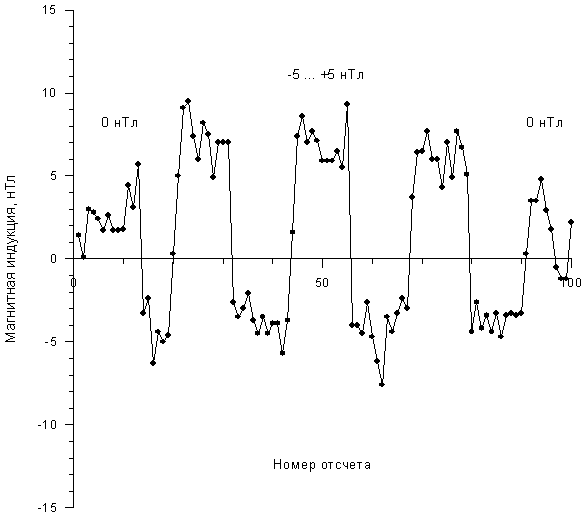
Рис. 7.14. Выходной сигнал феррозондового магнитометра в переменном прямоугольном магнитном поле с размахом 10 нТл. До 10 и после 90 отсчета поле отсутствует, между 10 и 90 отсчетом двойная амплитуда магнитной индукции составляет 10 нТл. Промежуток времени между соседними отсчетами 0.5 с.
Далее к выходу 10 мВ/мкТл магнитометра был подключен RC-ФНЧ первого порядка с частотой среза 13 Гц. Схема ФНЧ приведена на рис. 7.15.
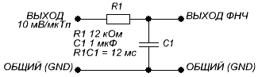
Рис. 7.15. Схема RC-ФНЧ первого порядка с частотой среза 13 Гц, подключаемого к выходу феррозондового магнитометра.
Осциллограмма выходного сигнала магнитометра после ФНЧ приведена на рис. 7.16. По сравнению с выходным сигналом без фильтра (рис. 7.6) улучшение примерно на порядок.
Рис. 7.16. Выходной сигнал феррозондового магнитометра с подключенным ФНЧ первого порядка с частотой среза 13 Гц при близком к нулю магнитном поле в зоне расположения феррозонда. Двойной размах от пика до пика 0.543 мВ соответствует 0.0543 мкТл.
Спектрограмма выходного сигнала магнитометра после ФНЧ приведена на рис. 7.17. Заметно, что на уровне помех стал выделяться сигнал частотой 50 Гц, который ранее (рис. 7.7) был не виден..
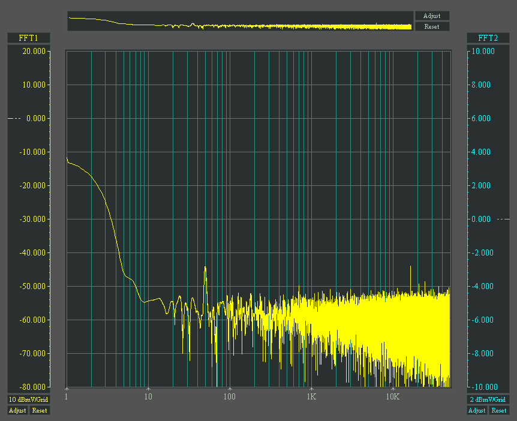
Рис. 7.17. Спектрограмма выходного сигнала феррозондового магнитометра с подключенным ФНЧ первого порядка с частотой среза 13 Гц при близком к нулю магнитном поле в зоне расположения феррозонда (ориентация восток-запад). Фильтр Blackman_Harris. Явно выделяется пик сигнала частотой 50 Гц высотой -45 дБмВ.
На рис. 7.18 показана зависимость выходного сигнала магнитометра с ФНЧ во времени, когда индукция магнитного поля в зоне датчика изменяется от -2.5 нТл до +2.5 нТл. Сигнал можно считать более-менее различимым, так что использование ФНЧ, в принципе, увеличивает разрешающую способность прибора до 5 нТл.
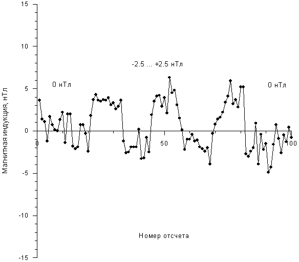
Рис. 7.18. Выходной сигнал феррозондового магнитометра с дополнительным ФНЧ первого порядка с частотой среза 13 Гц в переменном прямоугольном магнитном поле с размахом 5 нТл. До 10 и после 90 отсчета поле отсутствует, между 10 и 90 отсчетом двойная амплитуда магнитной индукции составляет 5 нТл. Промежуток времени между соседними отсчетами 0.5 с.
Чтобы понять, можно ли еще больше повысить разрешающую способность магнитометра за счет дальнейшего снижения уровня шума, на его выход 10 мВ/мкТл был подключен 3-х звенный RC-ФНЧ третьего порядка с частотой среза 10 Гц, схема которого приведена на рис. 7.19.
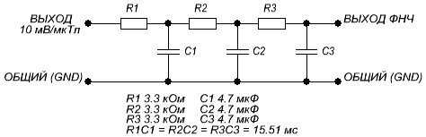
Рис. 7.19. Схема RC-ФНЧ третьего порядка с частотой среза 10 Гц, подключаемого к выходу феррозондового магнитометра.
Осциллограмма выходного сигнала магнитометра после ФНЧ третьего порядка приведена на рис. 7.20. По сравнению с предыдущим ФНЧ (рис. 7.16) ситуация улучшилась немного, хотя и не существенно.
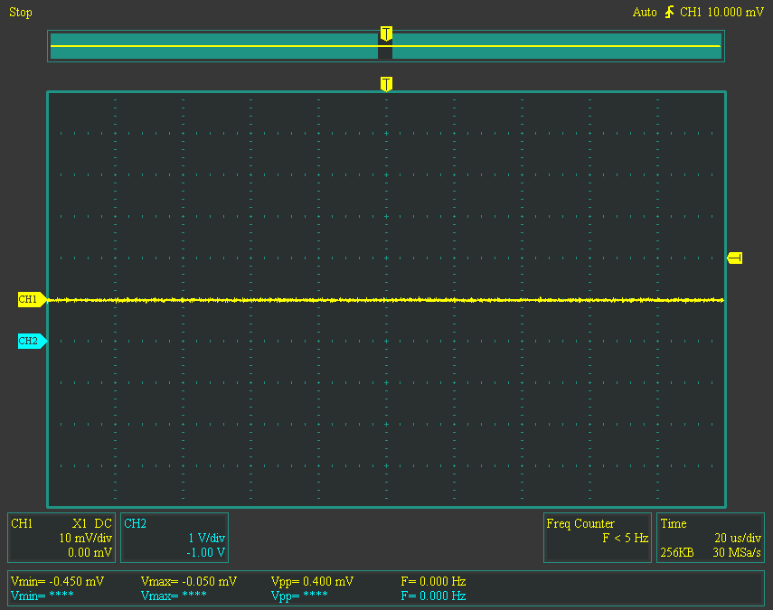
Рис. 7.20. Выходной сигнал феррорезонансного магнитометра с подключенным ФНЧ третьего порядка с частотой среза 10 Гц при близком к нулю магнитном поле в зоне расположения феррозонда. Двойной размах от пика до пика 0.400 мВ соответствует 0.040 мкТл.
Спектрограмма выходного сигнала магнитометра после ФНЧ третьего порядка показана на рис. 7.21. По сравнению с предыдущим ФНЧ (рис. 7.17) существенных улучшений почти не заметно.
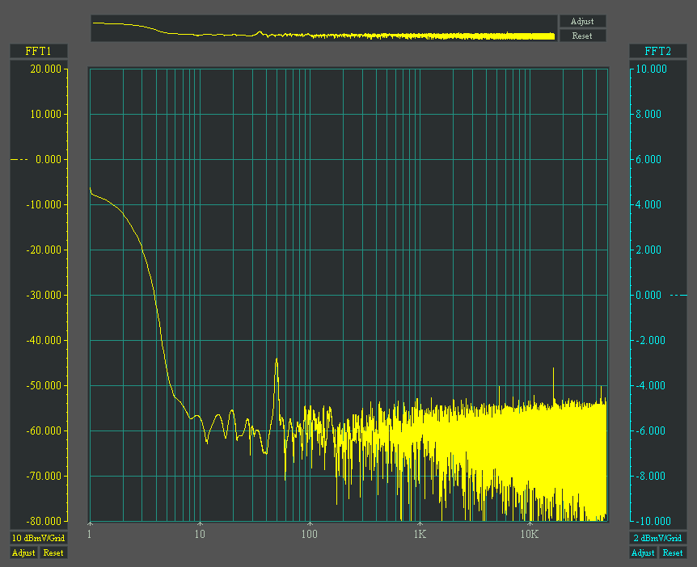
Рис. 7.21. Спектрограмма выходного сигнала феррорезонансного магнитометра с подключенным ФНЧ третьего порядка с частотой среза 10 Гц при близком к нулю магнитном поле в зоне расположения феррозонда (ориентация восток-запад). Фильтр Blackman_Harris. Явно выделяется пик сигнала частотой 50 Гц высотой -45 дБмВ.
На рис. 7.22 показан выходной сигнал магнитометра с ФНЧ третьего порядка с частотой среза 10 Гц, когда индукция магнитного поля в зоне датчика изменяется от -2.5 нТл до +2.5 нТл. Качество сигнала по сравнению с предыдущим ФНЧ (рис. 7.18) лучше практически не стало. Таким образом, можно сделать вывод, что для достижения разрешающей способности 5 нТл вполне достаточно простого RC-ФНЧ первого порядка.
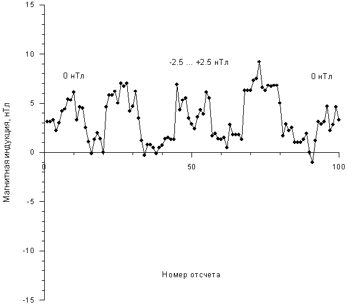
Рис. 7.22. Выходной сигнал феррозондового магнитометра с дополнительным ФНЧ третьего порядка с частотой среза 10 Гц в переменном прямоугольном магнитном поле с размахом 5 нТл. До 10 и после 90 отсчета поле отсутствует, между 10 и 90 отсчетом двойная амплитуда магнитной индукции составляет 5 нТл. Промежуток времени между соседними отсчетами 0.5 с.
На рис. 7.23 показан выходной сигнал магнитометра с ФНЧ третьего порядка с частотой среза 10 Гц в магнитном поле, близком к нулю (ориентация оси феррозонда в направлении восток-запад). В течение примерно одной минуты (50 с) дрейф выходного сигнала прибора находится в пределах +2 нТл, двойной размах от пика до пика не превышает 4 нТл. Следует заметить, что феррозонд использовался без магнитного экрана, магнитное поле в зоне его расположения вполне могло существенно изменяться во времени, а также содержать низкочастотные составляющие с частотами, кратными 50 Гц.
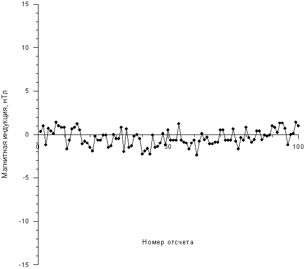
Рис. 7.23. Выходной сигнал феррозондового магнитометра с дополнительным ФНЧ третьего порядка с частотой среза 10 Гц в магнитном поле, близком к нулю (от 1 до 100 отсчета). Минимальное значение -2.4 нТл, максимальное значение +1.4 нТл, интервал от минимума до максимума 3.8 нТл. Промежуток времени между соседними отсчетами 0.5 с.
На рис. 7.24 и 7.25 приведены результаты часового мониторинга близкого к нулю магнитного поля, проведенного с помощью феррозондового магнитометра. В первом случае (рис. 7.24) магнитометр был испытан в полевых условиях вдали от искусственных источников магнитных полей и объектов, способных вносить искажения в топологию магнитного поля. Горизонтально установленный феррозонд ориентировался в примерном направлении восток-запад. Во втором случае (рис. 7.25) феррозонд располагался в предварительно размагниченном однослойном магнитном экране, сделанном из оцинкованного железа толщиной 0.7 мм. К сожалению, во время испытаний не было возможности отличить возможные изменения магнитного поля от дрейфа выходного сигнала самого прибора, была проведена лишь качественная оценка шумовых характеристик.
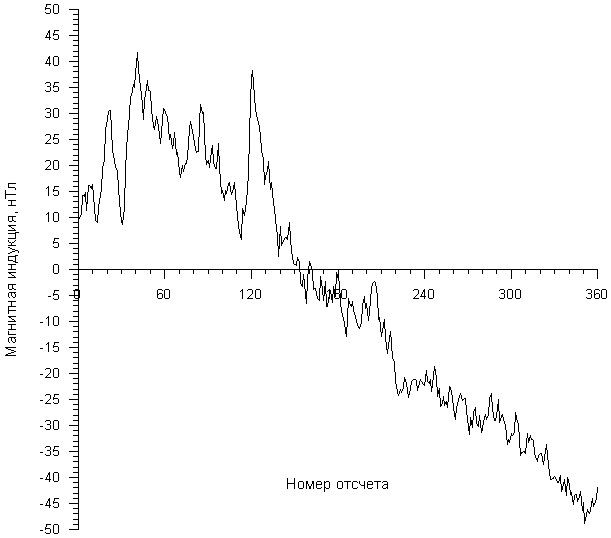
Рис. 7.24. Выходной сигнал феррозондового магнитометра с дополнительным ФНЧ третьего порядка с частотой среза 10 Гц в магнитном поле, близком к нулю (в полевых условиях вдали от источников магнитных полей, ориентация феррозонда восток-запад). Минимальное значение -48.9 нТл, максимальное значение +41.7 нТл, интервал от минимума до максимума 90.6 нТл. Промежуток времени между соседними отсчетами 10 с.
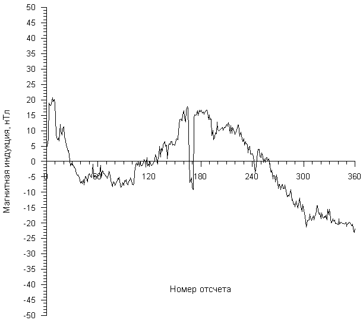
Рис. 7.25. Выходной сигнал феррозондового магнитометра с дополнительным ФНЧ третьего порядка с частотой среза 10 Гц в магнитном поле, близком к нулю (в предварительно размагниченном магнитном однослойном экране из оцинкованного железа). Минимальное значение -25.1 нТл, максимальное значение +20.7 нТл, интервал от минимума до максимума 45.8 нТл. Промежуток времени между соседними отсчетами 10 с.
8. Конструкция и технические характеристики
Феррозондовый магнитометр состоит из датчика - феррозонда и электронного преобразователя, соединенных парой гибких экранированных двухжильных кабелей. Электронный преобразователь собран в виде этажерки из трех печатных плат, разделенных межплатными стойками. На нижней плате смонтирован источник питания - аккумуляторная батарея с контроллером заряда и преобразователями напряжения. Средняя плата представляет из себя генератор импульсов возбуждения и управления, входной преобразователь ток-напряжение и синхродетектор. Верхняя плата - интегратор и цепи сдвига и калибровки выходного сигнала. Внешний вид феррозондового магнитометра показан на рис. 8.1.
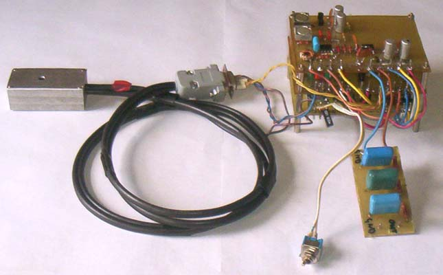
Рис. 8.1. Внешний вид феррозондового магнитометра. Датчик с гибким кабелем подключается к электронному преобразователю через разъем. Электронный преобразователь собран из трех печатных плат размером 100 х 75 мм2 каждая. К выходу электронного преобразователя подключена печатная плата RC-ФНЧ третьего порядка с частотой среза 10 Гц.
Технические характеристики феррозондового магнитометра:
9. Заключение
На основе ранее проведенной разработки [21] был собран феррозондовый магнитометр с достаточно хорошими характеристиками, который может быть принят в качестве основы для конструирования недорогих приборов для измерения индукции магнитного поля [19], сопоставимого с полем Земли, в диапазоне +200 мкТл. Чувствительность магнитометра увеличена на порядок по сравнению с приборами на основе AMR-датчиков [24, 26]. Стабильность и разрешающая способность магнитометра не являются выдающимися, но потенциал их улучшения есть в наличии. Кроме того, получен опыт построения схемы феррозондового магнитометра для практического применения. Также предполагается данную разработку использовать в качестве основы для изучения возможности применения новых магнитных материалов для сердечника феррозонда и внедрения других схемных и программных решений.
10. Соотношения между единицами измерения магнитной индукции (Тл - Тесла, Гс - Гаусс):
Ссылки:
18.07.2021
Альтернативные источники
энергии
Компьютеры и
Интернет
Магнитные поля
Механотронные системы
Перспективные
разработки
Электроника и
технология